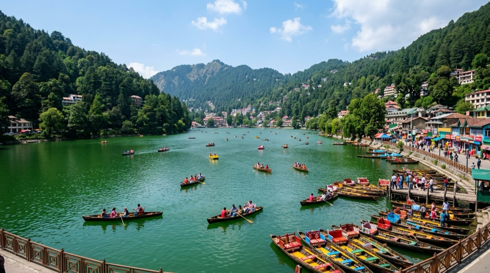

Hill Stations • Lakes • Wildlife Kumaon
Nainital District | Altitude: 2,084 m
Nainital
Cradled in the Kumaon hills around the emerald-tinted Naini Lake, Nainital is famed for serene boat rides, the historic Naina Devi Temple, and panoramic snow views from the cable car ridge.